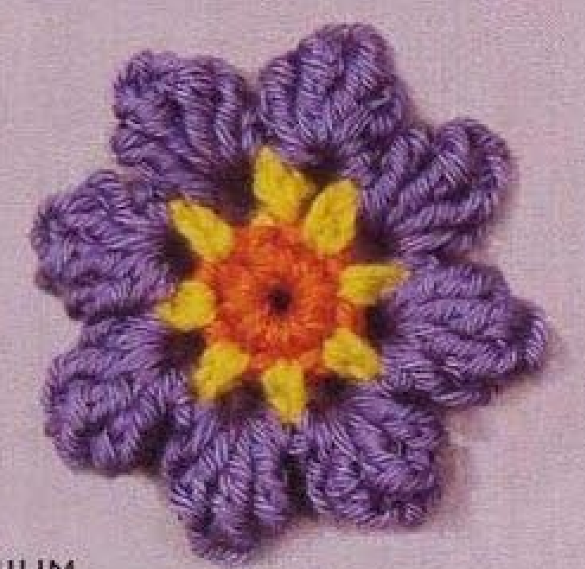
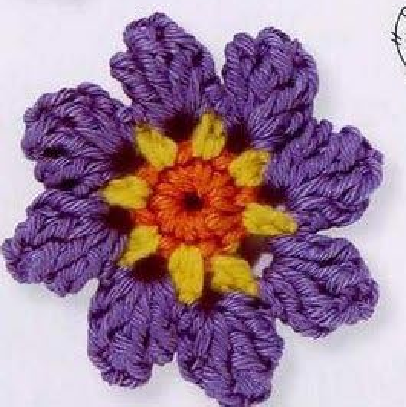
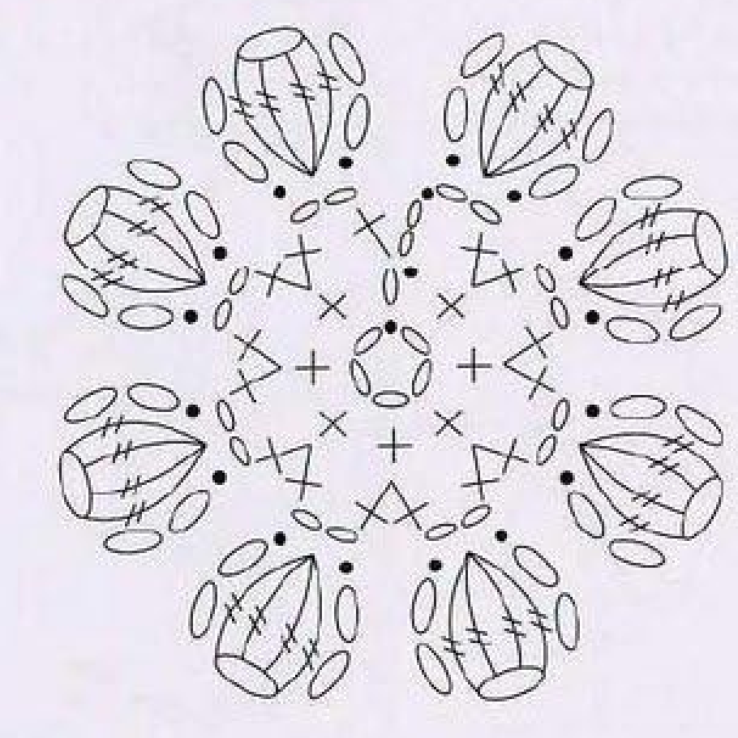
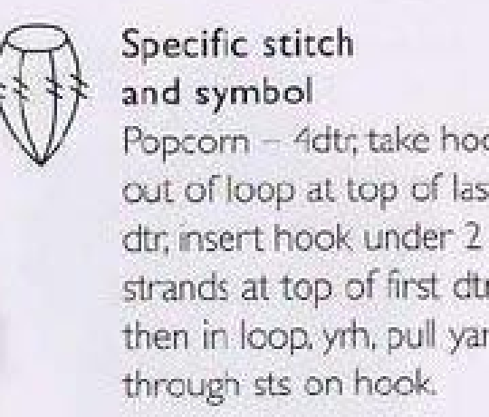
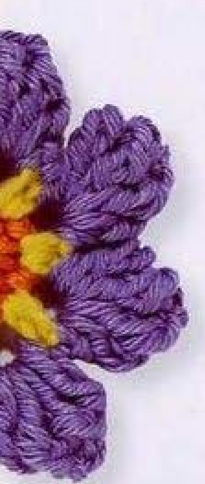

Crochet Geranium has a small orange center, yellow accents, and eight rounded purple popcorn petals. Its raised petal texture comes from groups of four tall stitches gathered together, rather than ordinary clusters closed while each stitch is unfinished. This guide follows pattern 57 in Lesley Stanfield’s 100 Flowers to Knit & Crochet, retaining its three-color recipe and source-specific popcorn in US crochet terms.

Key Takeaways
- Use 4-ply cotton in orange A, yellow B, and purple C.
- The orange round has eight counted positions: one starting chain and seven singles.
- Change to yellow in the closing slip stitch of round 1.
- The yellow round provides eight chain spaces for the purple petals.
- Each popcorn is made from four completed US trebles, using the source’s hook-removal closure.
- Make one opening petal plus seven repeated petals and fasten off invisibly.
CROCHET GERANIUM FLOWER PATTERN
Project: One three-color cotton flower with eight raised popcorn petals. The entry is in the book’s intermediate designs. All instructions below use US terminology. Hook size, numerical gauge, quantity, and finished dimensions are not specified.
| Skill level | Intermediate designs in the source. Practical guidance: familiarity with color changes, tall stitches, and hook-removal popcorn closure is helpful. |
|---|---|
| Base size | One flower with 8 popcorn petals. Measurements are not specified. |
| Yarn | 4-ply cotton: orange A, yellow B, and purple C. |
| Quantity, hook, gauge | Not specified. Choose a hook suited to your cotton and assess the center and first popcorn. |
| Notions | Scissors and a blunt needle for invisible fastening and securing color ends. |
| US abbreviations | ch = chain; sc = single crochet; tr = treble; sl st = slip stitch; RS = right side. UK dc = US sc; UK dtr = US tr. |
| Source popcorn | Work 4 complete tr in the indicated chain space. Remove the hook from the loop at the top of the last tr. Insert it under both top strands of the first tr, then into the saved loop. Yarn over and draw through the stitches/loops on the hook as directed in the source definition. |
| Center foundation | With A, ch 5 and join with a slip stitch into a ring. |
| Round 1, RS | Ch 1, work 7 sc in the ring; with B, sl st to the starting ch 1. 8 counted positions. Continue with B. |
| Round 2 | Ch 2, 1 sc in the starting ch 1 below, ch 2; [2 sc in the next sc, ch 2] 7 times. Sl st in the top chain of the opening ch 2. Fasten off. |
| Round 3 | Join C in a chain space. Ch 2, make a popcorn in that space below, ch 2, sl st in the same space; [sl st in the next chain space, ch 2, make a popcorn, ch 2, sl st in the same space] 7 times. Fasten off invisibly. |
| Finishing | Secure the ends on the back and arrange the eight purple petals around the orange and yellow center. The entry has no separate stem, leaf, or additional assembly paragraph. |
Understand the Eight-Petal Construction
This flower is worked in three rounds with a color change after the orange center. Round 1 creates eight counted positions around a five-chain ring. Round 2 uses yellow to build the short groups and chain spaces around that center. Round 3 places one raised purple popcorn petal in each space.
The orange ring remains visible at the middle, with yellow appearing between it and the purple outer petals. The source photograph shows a complete eight-petal motif without a green stem or leaf. The flowers adjacent to Geranium in the directory are other numbered patterns and do not add components to this recipe.
The compact card includes the popcorn definition because the word alone is not enough to reproduce the source’s petal construction. This popcorn uses four US trebles, each completed before the hook is removed. The closing movement brings the first and last tall stitch together into the raised form shown by the original symbol.
Prepare the Cotton and Three Color Roles
Use orange as A, yellow as B, and purple as C, all in 4-ply cotton. Keep the cotton thickness similar across colors so the center, yellow spaces, and popcorns relate comfortably to one another. The printed color roles are clear even if you later choose an optional variation in shade.
The entry gives no hook size, yarn quantity, numerical gauge, or finished diameter. Choose a hook that works comfortably with your cotton and assess the orange round before continuing. You should be able to identify the starting chain and actual singles without forcing the hook through an overly tight join.
Prepare scissors and a blunt needle for the color ends. Optional markers can identify the starting chain or first yellow space. During the popcorn closure, keep the saved active loop large enough to reinsert the hook but controlled enough that the last treble does not unravel. That handling matters more than an invented difficulty score or time estimate.
US Single Crochet and US Treble Crochet
The source uses UK double crochet for the short center stitches; those become US singles in this guide. Insert the hook into the indicated base, draw up a loop, then draw through the two loops on the hook. The first-round singles are worked into the ring, while the yellow repeated pairs are worked into individual center stitch tops.
The source popcorn uses UK double trebles, translated as US trebles. Yarn over twice, insert into the indicated chain space, draw up a loop, then draw through two loops three times. Complete every treble separately. There are four actual tall stitches in the popcorn before its hook-removal closure.
Do not replace these four completed trebles with four unfinished doubles closed together. That would change both the height and the structure into a different cluster. The supplied popcorn symbol shows a gathered group, and its written definition specifies the full stitches and hook movement used to obtain that shape.
Stitch checkpoint: Each popcorn uses four completed US trebles. It is not a four-double cluster and does not use partial stitches left on the hook during their construction.
Step 1: Make the Orange Five-Chain Ring
With orange A, chain five and join with a slip stitch into a ring. Keep the chain untwisted and its opening accessible. This is a fixed chain ring, rather than an adjustable ring pulled closed with the starting end. The small central opening remains part of the photographed source appearance.
With the right side facing, chain one and work seven US singles into the ring. Count the seven actual singles separately from the starting chain. The source states eight stitches for this round, with the starting chain supplying the eighth counted position.
Before joining, identify the starting chain. The next round refers back to that chain below, so do not substitute a join into the first actual single just because it is easier to see. Keep the ring and stitch tops clear enough that the yellow opening group can be worked into the intended location.
Step 2: Change to Yellow at the Round Join
Use yellow B to make the closing slip stitch into the starting chain of round 1. Continue with B for the next round. This changes the working color at the specified join rather than adding a separate yellow stitch above the orange round after it has already been fastened off.
Keep the orange and yellow ends on the back where possible. Do not pull the color change so firmly that the starting chain collapses or the yellow slip stitch disappears into the orange ring. The join should secure the color while preserving the next working location.
Check that the round still has its eight counted center positions. The color change does not add a new counted center stitch. An extra yellow single inserted solely to attach B would change the count and leave the following seven repeated pairs out of alignment with the source.

Step 3: Make the Yellow Chain-Space Round
Chain two, work one US single in the starting chain of round 1 below, and chain two. This is the specific opening group. Continue with two singles in the next single, followed by two chains. Repeat that bracketed two-single-and-two-chain group seven times in total.
Each repeated pair shares the next center single as its base. There are seven actual singles from round 1 to receive those pairs. The opening group uses the counted starting-chain position, and the repeated groups use the seven actual singles. Together they create the eight-space route for the petals.
Join with a slip stitch in the top chain of the opening two-chain group and fasten off. This join location is different from the first-chain joins used by some other flowers in the book. Preserve the Geranium instruction rather than automatically applying a familiar loop-round join from another pattern.
Yellow checkpoint: The opening group uses the starting chain below. Seven repeated pairs follow in the actual center singles, and the closing join uses the top opening chain.

Step 4: Learn the Four-Treble Popcorn Closure
Work four complete US trebles into the same indicated chain space. Keep their tops accessible and count all four before closing the group. The short two-chain rise that surrounds the petal is separate from these four tall stitches and does not replace one of them.
Remove the hook from the active loop at the top of the last treble. Insert the hook under both top strands of the first treble, then into the saved active loop. Yarn over and draw through the stitches or loops on the hook, following the source-specific definition shown beside the chart.
This movement brings the tall group together into a popcorn rather than leaving a flat fan of four separate stitch tops. Keep the saved loop under control while reinserting the hook. If the last stitch begins to unravel, restore that full treble before attempting the closure again.

Step 5: Make the First Purple Petal
Join purple C in a yellow chain space. Chain two, make the four-treble popcorn in that same space below, chain two, and slip stitch in the same space. This completes the first petal, with a short chain section on each side of the raised popcorn.
Keep every tall stitch of the popcorn in the same space. The petal does not bridge two neighboring yellow spaces, and the closure does not attach to an orange center stitch. The yellow space is its base, while the four tall stitches and hook-removal finish form its raised purple body.
Arrange the completed popcorn so its raised face is visible with the flower center facing you. Avoid pulling the closing slip stitch so tightly that the two chain sides vanish beneath the popcorn. You should still be able to identify the space and move to the next one for the repeated petals.
A Popcorn Is Completed Before It Is Gathered
Geranium’s four tall stitches are completed individually, then the hook is removed and reinserted through the first stitch and saved loop. This differs from a cluster that holds unfinished stitches on the hook. Follow the source definition so the petal retains its raised popcorn form.
Step 6: Repeat the Petal in Seven More Spaces
Slip stitch into the next yellow chain space. Chain two, make a popcorn in that space, chain two, and slip stitch in the same space. Repeat that bracketed group seven times in total after the opening petal. Advance one yellow space for each petal rather than returning to a previously used space.
The final count is eight popcorn petals: one opening petal plus seven repeated petals. Each contains four actual US trebles. If you find an unused yellow space after making eight petals, inspect whether one space received two popcorns or whether an extra space was made in round 2.
Fasten off invisibly as the source directs after the seventh repeated petal. The entry does not add a new border round or specify a separate final slip stitch beyond this finishing instruction. Use the needle to tidy and secure the end so the transition follows the surrounding stitches.
Petal checkpoint: Count eight popcorns, each with four tall stitches and a single yellow-space base. The opening petal is already part of the total.
Secure the Color Ends and Arrange the Flower
Secure the orange, yellow, and purple ends on the back through established stitches. Keep each color’s finishing yarn within its own area when possible so it does not show across the front. Avoid drawing a purple tail through the orange opening or across a yellow accent simply because that route is shorter.
Arrange the eight popcorn petals around the center with your fingers and compare their heights. The entry supplies no pressing instruction, blocking diameter, or temperature for this flower. If you choose additional shaping, follow the cotton-care guidance and test an appropriate method on a sample.
Inspect the raised petals before attaching the motif to another item. A loose popcorn closure can spread into a flat group, while an unsecured end can shift during handling. Correct the closure or finishing before sewing the flower down, rather than relying on a backing to hide the problem.

Troubleshoot the Eight-Part Structure
The yellow round has an unexpected gap
Check the orange start and seven actual singles. The yellow opening group is worked in the starting chain below, followed by seven paired groups in the actual singles. An extra or missing orange stitch changes that route. Recount the foundation before adding another yellow group to fill a visible gap.
A purple petal is flat
Confirm that four full US trebles were made and that the hook-removal closure connected the first treble top with the saved loop. A flat four-stitch fan lacks that gathering movement. A partial-stitch cluster may also look different because it uses another closure and can have another stitch height.
The petals are different sizes
Compare their four tall stitches and two-chain sides. An omitted treble or extra chain changes the shape, while uneven tension can make a correctly counted popcorn appear narrower. Correct a count error directly rather than stretching adjacent petals to make the outer edge look balanced.
Optional Colors, Sizing, and Applique Placement
The source color combination is orange, yellow, and purple. Other color choices are optional adaptations while the A, B, and C roles and eight-petal construction remain the same. Choose enough contrast to keep the center, yellow spaces, and raised popcorns visually distinct.
A different yarn weight or hook can change the motif’s dimensions, but no graded sizes or gauge calculation is provided. Test a complete flower with your materials before planning an attachment space. Adding petals or enlarging the center stitch count changes the pattern structure, rather than simply selecting a larger measured version.
Suggested applications include a decorative flower on a fabric panel, bag, or handmade accessory. These are additional use ideas rather than separate projects in the Geranium entry. Position the flower before sewing and use stable back or center stitches for attachment, allowing the popcorns to retain their raised shape.
Variation guidance: A stem, leaf, extra border, altered popcorn definition, or different petal count is a personal adaptation. Keep the original three-color, eight-popcorn recipe clear.
Geranium at a Glance
- 4-ply cotton in orange A, yellow B, and purple C.
- Five-chain ring and eight counted center positions.
- Yellow pairs and chain spaces made in round 2.
- Eight purple petals, each with a four-US-treble popcorn.
- Invisible finish and secure color ends; no separate stem or leaf in this entry.
Conclusion
Geranium’s raised petals depend on its four-treble popcorn definition and eight-space center route. Check the orange count, preserve the yellow opening placement, and complete each tall stitch before gathering the popcorn. The compact card contains the complete source recipe in US terms, while the chart and stitch key clarify the structure. Click the Pin to return to the pattern when you are ready to make the flower.
Source and Tags
Source: Lesley Stanfield, 100 Flowers to Knit & Crochet, pattern 57 Geranium. Instructions, flower chart, popcorn definition, and completed examples are on printed page 76, PDF page 70; the directory example is on printed page 28, PDF page 23. Some instruction-page examples are cut off at scan edges. Source photographs show finished work, not progress images. The recipe is translated into US terminology, with additional practical suggestions identified separately.
Crochet GeraniumPopcorn PetalsEight-Petal FlowerCotton CrochetThree-Color MotifUS Crochet Terms